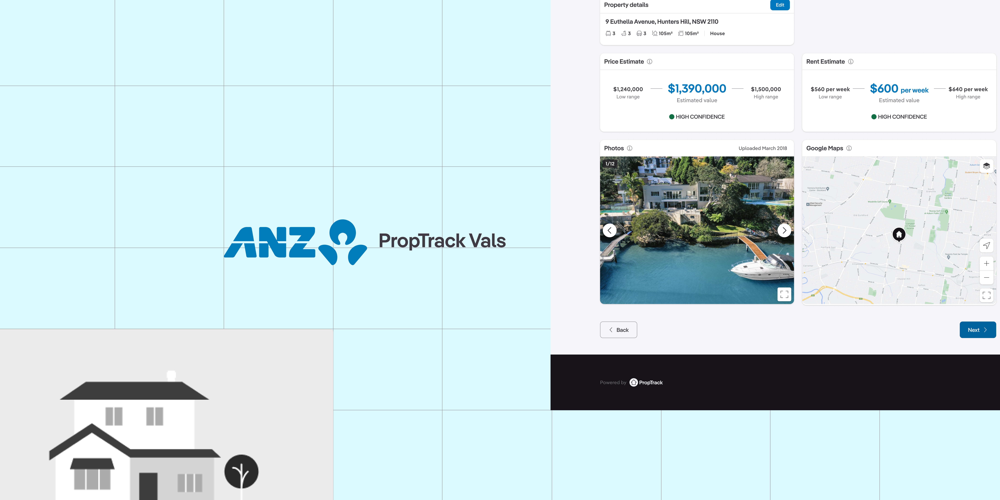

Work / REA Group – PropTrack
PropTrack × ANZ valuations platform
PropTrack is the data arm of REA Group, created to power software for bankers and valuers in the property market. My role focused on discovery for B2B solutions for banks: identifying current challenges and unmet future needs in their valuation tools, through onsite workshops and interviews with core customers across Australia.

Problem
Property valuation processes between banks and valuation firms are fragmented, manual and difficult to manage at scale. Complex workflows — job requests, compliance requirements, status tracking and stakeholder communication — are often handled across disconnected systems, emails and spreadsheets. This leads to delays, reduced transparency, duplicated effort and increased operational risk.
I conducted around 16 semi-structured interviews with bank valuers and private lenders and brokers to build a current-state valuation journey for ANZ, with pain points and opportunities. This divided the work into four key pillars for delivery.

Pillar 1 — Preparing the order
Early alignment between lender or broker and borrower is critical.
Pains: time lost aligning expectations on property value; uncertainty around construction costs and benchmarks; inconsistent inputs leading to downstream issues.
Pillar 2 — Ordering valuations
Information must be accurately captured and submitted.
Pains: complex CDP decisioning requirements; manual document submission; missing or inconsistent information causing delays.
Pillar 3 — Tracking progress
Reports may be rejected due to non-value-based errors, such as address typos.
Pains: inefficient back-and-forth to correct minor issues; continued reliance on unclear email communication.
Pillar 4 — Resolving report issues
After submission, users wait for the valuation report.
Pains: rework required for a simple fix; inefficient back-and-forth; unclear email communication.
Solution


Customers’ unmet needs. Banks lack real-time visibility into valuation progress and quality, while valuation firms struggle with inconsistent briefs, shifting requirements and inefficient task coordination. As volume and regulatory pressure increase, these inefficiencies compound, affecting turnaround times, decision-making and customer experience. We mapped these progress steps to understand their relationships and the appropriate tasks.
I designed wireframes for a workflow-driven platform that connects all users through a shared system of record, replacing fragmented communication with structured, transparent processes. Smart forms guide users through capturing borrower estimates, cost of sale and LVR, with structured data capture aligned to CDP requirements, meaningful status updates instead of generic milestone emails, and clear indicators for blockers, actions and timelines.


These were turned into clickable prototypes and shown to the customer and end users, with every hypothesis validated or disproved. Everyone said the process gave them better visibility and more confidence during valuation processing.
Production
I created high-fidelity screens and added new components to the REA design system: tables with expandable content and search, sort and filter capabilities. By transforming a fragmented, manual process into a connected workflow, the platform lets lenders, brokers and valuers work with greater clarity, speed and confidence — ultimately improving the lending experience for internal teams and borrowers alike.
This project highlighted the importance of designing for complex, multi-stakeholder workflows. Rather than focusing on individual features, success came from reducing ambiguity, improving shared understanding, and creating a single source of truth across the valuation lifecycle.